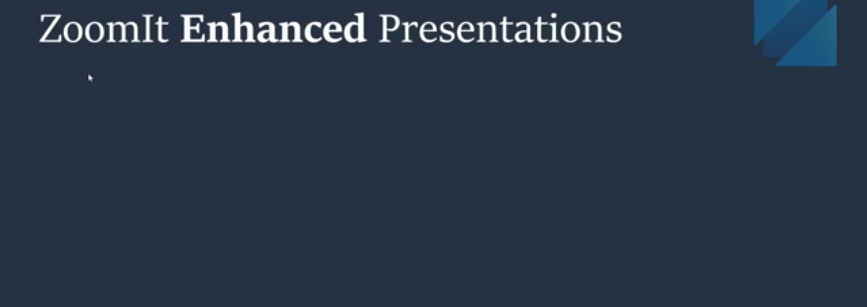

ZoomIt utility
ZoomIt is a screen zoom, annotation, and recording tool for technical presentations and demos. You can also use ZoomIt to snip screenshots to the clipboard or to a file. ZoomIt runs unobtrusively in the tray and activates with customizable hotkeys to zoom in on an area of the screen, move around while zoomed, and draw on the zoomed image.

ZoomIt is one of the Sysinternals utilities and its standalone version works all versions of Windows. To provide the most flexibility, this standalone version will continue to be available from Sysinternals. For more information about using ZoomIt or to download a standalone version, see ZoomIt in the Sysinternals documentation.
Enabling
To start using ZoomIt, enable it in the PowerToys Settings.
Additional settings
In addition to enabling or disabling ZoomIt in the PowerToys Settings, you can configure the following options:
| Behavior settings | Description |
|---|---|
| Show tray icon | Show or hide the ZoomIt tray icon. The tray icon is shown by default when enabling ZoomIt. |
| Zoom settings | Description |
|---|---|
| Zoom Toggle Hotkey | Set the hotkey to toggle zoom on and off. The default hotkey is Ctrl+1. |
| Animate zoom in and zoom out | Enable or disable the zoom in and zoom out animation. The animation is enabled by default. |
| Specify the initial level of magnification when zooming in | Set the initial level of magnification when zooming in (1.25 to 4.0). The default magnification level is 2.0. |
| Live Zoom settings | Description |
|---|---|
| Live Zoom Toggle Hotkey | Set the hotkey to toggle live zoom on and off. The default hotkey is Ctrl+4. |
| Draw settings | Description |
|---|---|
| Draw without Zoom Hotkey | Set the hotkey to draw without zoom. The default hotkey is Ctrl+2. |
| Type settings | Description |
|---|---|
| Text font | Set the font for text annotations in drawing mode. The default font is Microsoft Sans Serif. |
| DemoType settings | Description |
|---|---|
| Input file | Specify text in a file to use in DemoType mode. |
| DemoType Toggle Hotkey | Set the hotkey to toggle DemoType mode on and off. The default hotkey is Ctrl+7. |
| Drive input while typing | Enable or disable the ability to drive input with typing in DemoType mode. The default setting is disabled. |
| DemoType typing speed | Set the typing speed in DemoType mode (10 to 100). The default typing speed is 55, and larger numbers are faster. |
| Break settings | Description |
|---|---|
| Start Break Timer Hotkey | Set the hotkey to start the break timer. The default hotkey is Ctrl+3. |
| Timer (minutes) | Set the break timer duration in minutes. The default break timer duration is 10 minutes. |
| Show Time Elapsed After Expiration | Show or hide the time elapsed after the break timer expires. The time elapsed is shown by default. |
| Play Sound on Expiration | Play a sound when the break timer expires. A sound is not played by default. When enabled, use the "Alarm sound file" option's Browse button to specify the sound file to play when the break timer expires. |
| Timer Opacity | Set the opacity of the break timer (10% to 100%). The default opacity is 100%, and larger numbers are more opaque. |
| Timer Position | Set the position of the break timer on the screen. The default position is "Center". |
| Show Background Bitmap | Show or hide the background bitmap behind the break timer. The background bitmap is not shown by default. When enabled, the following options become available:
|
| Record settings | Description |
|---|---|
| Record Toggle Hotkey | Set the hotkey to toggle recording on and off. The default hotkey is Ctrl+5. |
| Scaling | Set the scaling factor for the recorded image (0.1 to 1.0). The default scaling factor is 1.0, and larger numbers are more zoomed in. |
| Capture audio input | Enable or disable capturing audio input during recording. Audio input is not captured by default. |
| Microphone | Select the microphone to use for audio input during recording. The default microphone is "Default", the current system default audio input device. |
| Snip settings | Description |
|---|---|
| Snip Toggle Hotkey | Set the hotkey to toggle screen snipping on and off. The default hotkey is Ctrl+6. |
For more details on using ZoomIt, including additional hotkey information, see ZoomIt in the Sysinternals documentation. For information about the DemoType feature in ZoomIt, see Make demo typing easy with DemoType in ZoomIt on the Sysinternals blog.
Install PowerToys
This utility is part of the Microsoft PowerToys utilities for power users. It provides a set of useful utilities to tune and streamline your Windows experience for greater productivity. To install PowerToys, see Installing PowerToys.
Related content
Sysinternals ZoomIt documentation